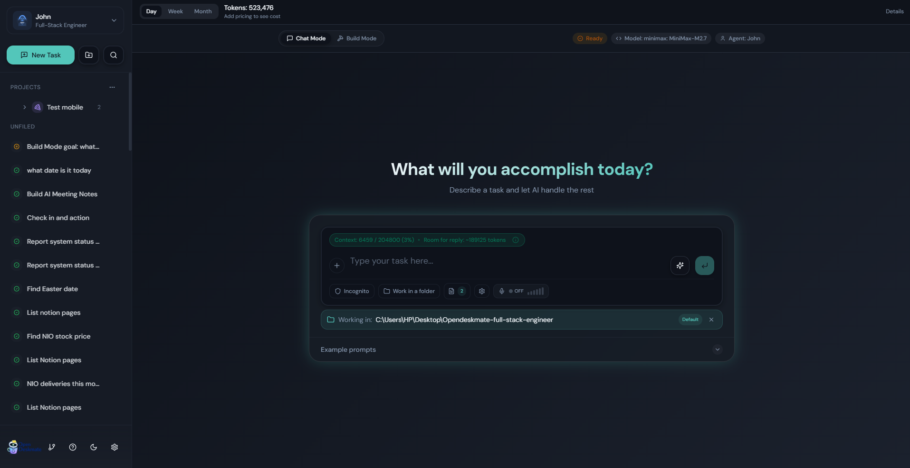
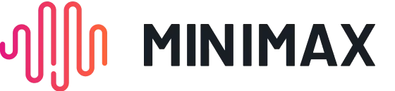
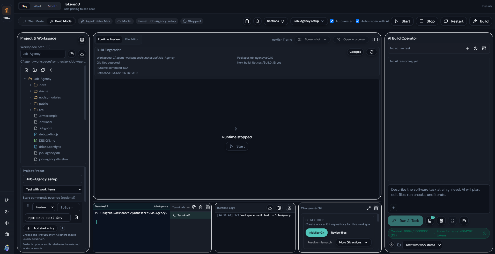
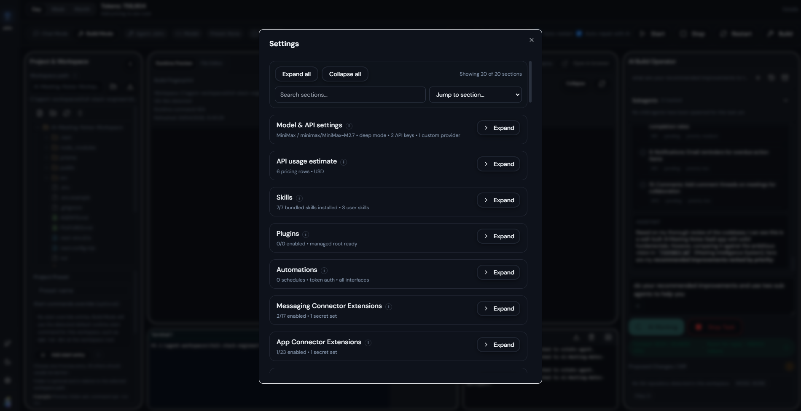
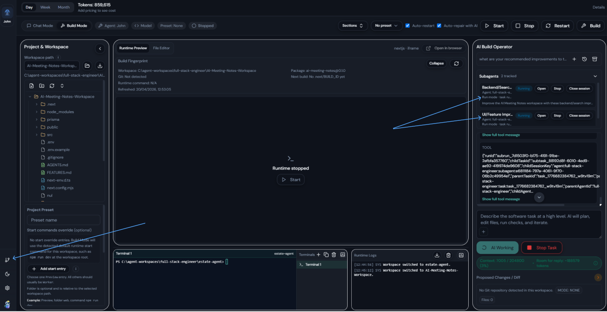

Models, permissions, connectors, plugins, schedules, and pricing are configured in the UI.
Open-source desktop AI companion for Windows
Desktop AI for practical work, with setup you can actually manage.
Open Deskmate is an open-source desktop AI companion designed for founders, consultants, solo professionals, knowledge workers, and early contributors who want real workflows, local control, and a simple UI instead of a CLI-heavy stack.
Designed for practical productivity
Chat + Build
One app for quick prompts and longer-running project work.
Move between direct chat, workspace-aware build flows, tracked subagents, and settings-driven control without changing tools.
Use local workspaces, inspect diffs, review logs, and keep tasks grounded in the project you are actually working on.
Chat Mode

Tracked subagents
2 active
1 session
Visible in UI
Local-first trust
Built to keep day-to-day AI work understandable.
Open Deskmate is designed to keep the assistant surface, the configuration surface, and the runtime surface in one place so local work does not become opaque or hard to control.
Open source (MIT)
Runs from your desktop
Bring your own providers
Permissions in the UI
Visible subagent activity
Windows downloads
Download Open Deskmate from GitHub Releases.
Windows builds are published on GitHub Releases. Choose the installer for the standard setup flow or the portable executable if you want to run the app without installing it.
Recommended
Windows Installer
Best for most users who want the normal install flow and desktop integration.
No install
Portable EXE
Run Open Deskmate directly if you prefer a portable Windows build without installation.
Installer note: The Windows installer for this prerelease is not yet code-signed, so Windows may show a warning before installation or launch. That is expected for this build. If you prefer to avoid the installer, the portable version is also available.
On the GitHub release page, click the Assets section to expand the available downloads.
Looking for older versions or the full asset list? Browse all GitHub Releases.
What it does
An AI assistant that feels like a desktop tool, not a demo.
Open Deskmate is built to bring AI into practical daily work. It combines conversational help, workspace-aware build flows, configurable agent behavior, and local-first operation in a single interface that stays understandable as your setup grows.
Works on your machine
Use your own provider keys, work with local files, and keep everyday operation close to your desktop instead of routing everything through a hosted product.
Fits real workflows
Use Chat Mode for direct prompts or Build Mode when a task needs history, files, diff review, runtime logs, terminals, and longer-running execution.
Keeps you in control
Configure agents, permissions, connectors, subagents, plugins, and automation from a simple UI designed to make advanced setups usable.
Works with your setup
Built around common AI providers and the connector catalog already in the app.
Open Deskmate is designed to work with the providers and workflow surfaces people already use.
Providers
OpenAI
Anthropic
Google
xAI
Ollama
OpenRouter
 Kimi
Kimi


Messaging Connectors
Discord
Telegram
BlueBubbles
Google Chat
iMessage
LINE
Matrix
Mattermost
Microsoft Teams
Nextcloud Talk
Nostr
Signal
Slack
Tlon
WhatsApp
Zalo OA
Zalo User
App Connectors
Notion
Trello
Obsidian
GitHub
Slack
Dropbox
Canva
OneDrive
Supabase
Google Slides
Google Tasks
Google Sheets
Google Docs
Google Drive
Google Photos
Google Maps
YouTube
Figma
Miro
Gmail
Email Triggers
Google Calendar
Microsoft Outlook
Why it's different
More usable than a CLI-heavy agent stack.
Open Deskmate keeps the power of local agent workflows, but brings setup, oversight, and daily operation into a desktop interface that is easier to adopt and easier to keep under control.
UI-first setup
Configure providers, permissions, connectors, plugins, schedules, and pricing from the app instead of relying on scattered configuration and hidden runtime state.
Acts across real workspaces
Move beyond a single chat window with Build Mode, task history, diffs, runtime logs, embedded terminals, and project-aware execution.
Visible delegated work
Tracked subagents are surfaced as a first-class part of the app so child-agent execution can be monitored, revisited, and managed instead of staying hidden.
Local-first by design
Built for people who want practical desktop AI workflows without turning normal operation into a hosted service dependency or a developer-only setup process.
Key features
Built for practical AI work, not just prompting.
Chat Mode and Build Mode
Switch from fast prompts to a full workspace surface with history, file tree, diff review, logs, and terminals.
Tracked subagents
Run delegated child-agent work with visible status, session and run modes, and a dedicated global monitoring page.
UI-first configuration
Configure models, permissions, connectors, schedules, pricing, and agent behavior from the app instead of scattered config files.
Connector-ready workflows
Built to route messaging and app connectors into the right agent/account binding when automation needs to touch outside systems.
Skills, plugins, and help
Extend the app with managed plugins, user skills, slash commands, and a markdown-driven help system.
Local-first everyday productivity
Designed to support practical desktop work for founders, consultants, solo professionals, and early technical teams.
How it works
Simple flow, advanced control.
The product is designed to stay approachable even when you need more than basic prompting.
Step 1
Install or clone the project
Start from the GitHub repository, install dependencies, and run the desktop app locally on Windows.
Step 2
Configure the app in the UI
Add provider keys, choose agent defaults, adjust permissions, and connect the tools or connectors you want to use.
Step 3
Work in Chat, Build, or Subagents
Use the surface that fits the task: quick prompts, workspace execution, or delegated child-agent work with visible tracking.
Screenshots
See the core product surfaces.
The app is designed around a few clear working modes so you can stay oriented while tasks, settings, and child-agent runs remain visible.



Use cases
Built for practical day-to-day work.
Open Deskmate is designed to support everyday productivity for people who need help turning intent into actual work across files, tasks, and structured workflows.
Founders
Draft briefs, clean up notes, organize project folders, and keep operational tasks moving without context-switching across tools.
Consultants
Prepare deliverables, summarize documents, structure client workspaces, and run more repeatable workflows from one desktop surface.
Solo professionals
Use one assistant for writing, planning, file management, and longer-running task execution without needing a complex team setup.
Knowledge workers
Turn notes, drafts, reports, folders, and follow-up actions into more manageable workflows with a local-first AI companion.
Early contributors
Explore the codebase, test workflows, and help shape a UI-driven open-source desktop agent product while it is still evolving.
Small technical teams
Use Build Mode and tracked subagents to support implementation, review diffs, and keep longer-running work grounded in the workspace.
Get started
Start with the repo, then build or run locally.
Open Deskmate is served through the repository and designed to be straightforward to evaluate from source.
- Open the repository. Review the README and installation notes on GitHub.
- Install dependencies. Use Node.js 20+ and pnpm 9+.
- Run development or build the app. Start locally with `pnpm dev` or package for Windows with `pnpm -F @accomplish/desktop build:win`.
- Configure your providers in the app. Add your own keys and tune models, permissions, and agents from the settings UI.
FAQ
Questions people are likely to ask first.
Is Open Deskmate open source?
Yes. The project is open source and positioned as a contributor-friendly desktop AI companion built in public.
Does it run locally?
It is designed as a local-first desktop app. You configure your own providers and operate against local workspaces from the desktop UI.
Do I need to use a CLI to configure it?
No. A core part of the product direction is making advanced setup manageable from a straightforward settings interface.
What makes it different from Openwork or OpenClaw?
Open Deskmate focuses on ease of use, desktop operation, and keeping configuration, oversight, and execution visible in the UI.
What kinds of workflows is it built for?
It is built for practical productivity: quick chat tasks, workspace-aware build flows, delegated subagent work, and configurable connector-backed workflows.
Can I contribute?
Yes. Early contributors are welcome, and the repository includes a CONTRIBUTING.md file with the current contribution path.
Open source
Built in public and open to contributors.
Open Deskmate is an MIT-licensed project. Contributions are welcome, especially from early users who care about making desktop AI more usable, configurable, and grounded in practical work.
Contribute
Fork the repository, create a feature branch, and open a pull request against main.
Follow development
Explore the codebase, screenshots, and evolving desktop workflows directly in the repository.
View repositoryGet involved
Explore the repo, try the desktop app, and help shape what comes next.
Open Deskmate is early enough to be shaped by contributors and practical users, but already focused enough to show a clear product direction.
Contact
Questions, collaborations, or early contribution interest?
Reach out directly if you want to talk about the product, contributing, or how Open Deskmate is evolving as a practical desktop AI companion.